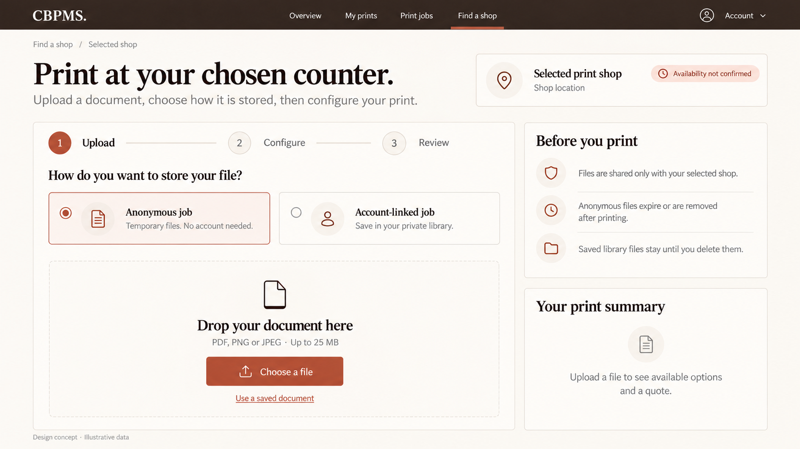
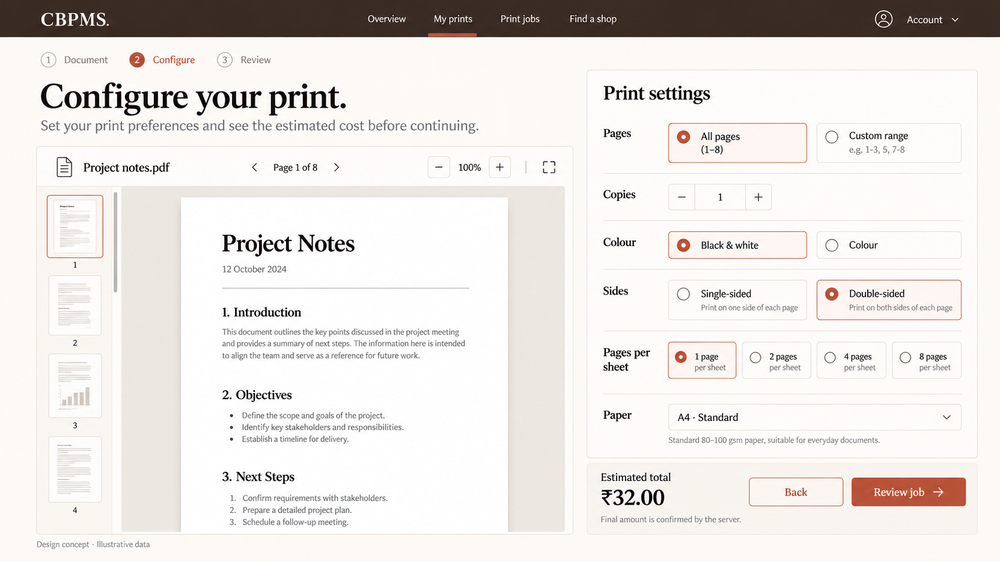
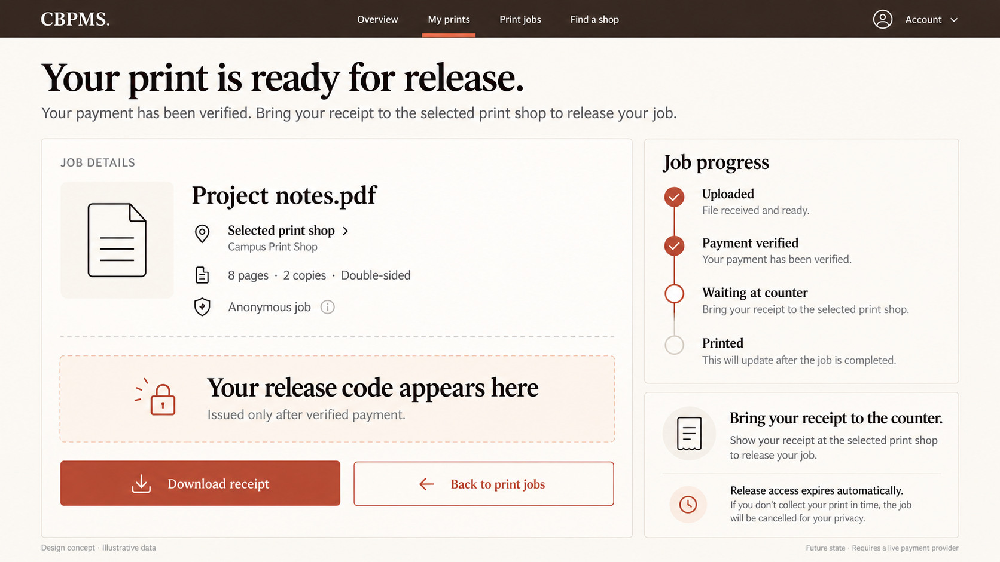
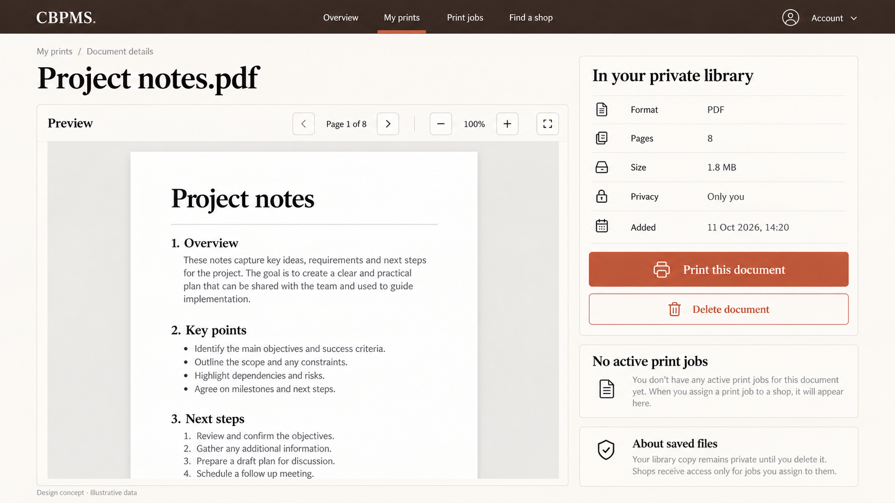
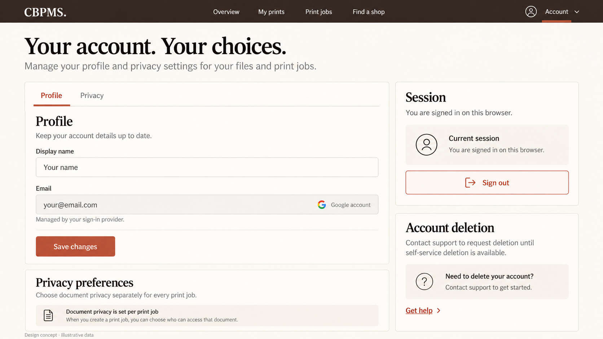
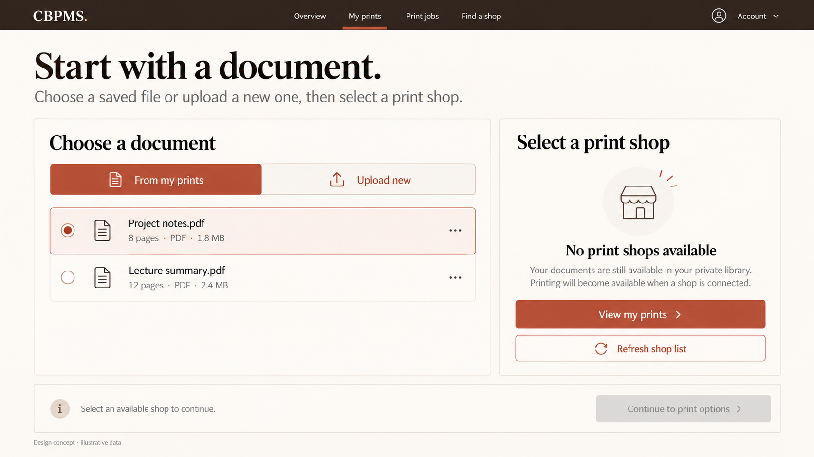
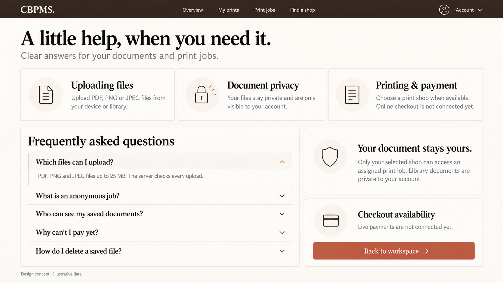
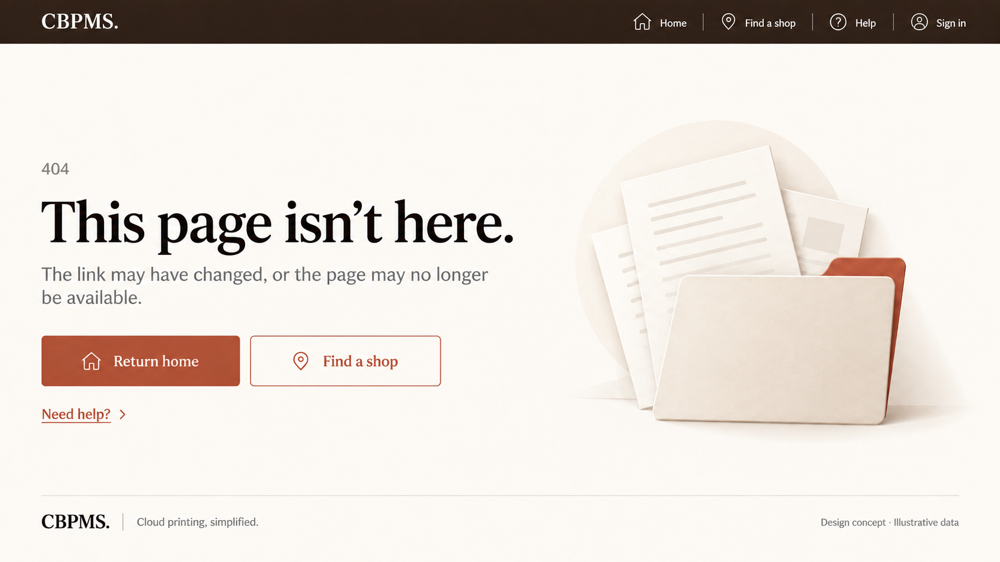
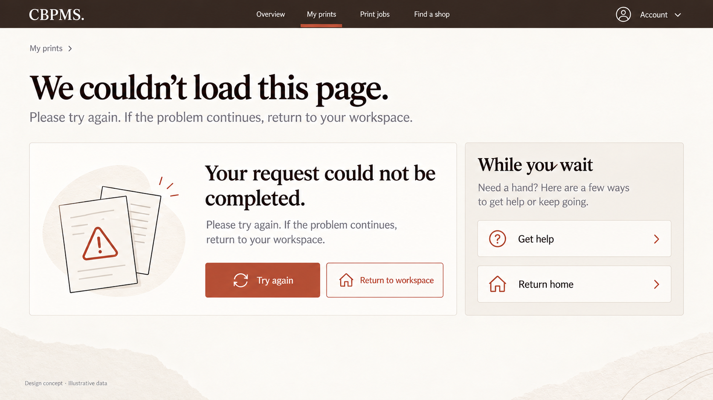

Design references only. Application code is unchanged. Files, prices, dates and shops are illustrative, not seed data. Checkout stays unavailable; the verified-payment receipt is a future gated state. Written specifications override illustrative labels.
Audited coverage and specification · Other-IDE implementation prompt · Generation prompts
Shop upload and privacy
Existing shop upload/privacy flow

Configure a print
Existing print configuration step

Job details and release receipt
Future verified-payment state only

Private document detail
Existing library detail pane

Account and privacy
Proposed settings, capability-gated

Start a print and no shops
Existing new-print route, successful empty shop result

Help and privacy
Existing help page · final corrected version

Not found
Existing global 404 · final corrected version

Recoverable service error
Existing safe recovery screen
